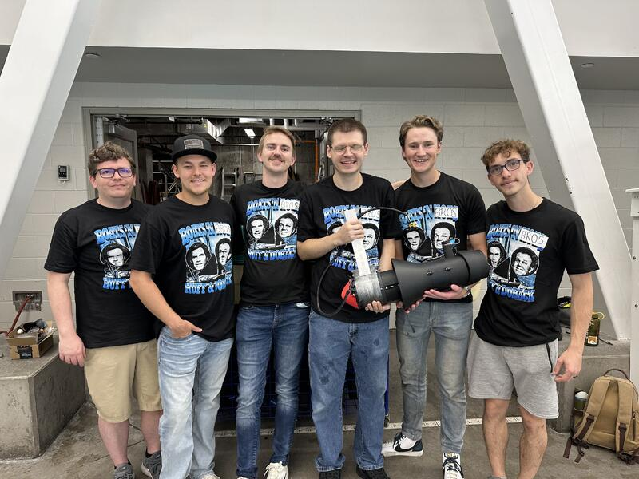
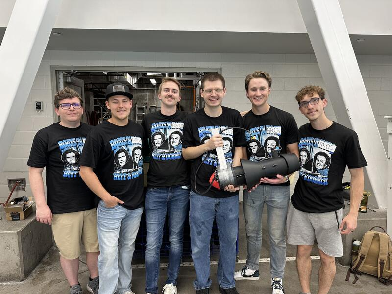

Turbo Regatta (Electric Propulsion System)
 
Designed and built an electric propulsion system for pedal boats with a cross-disciplinary team; led waterproof (IP28-rated) mechanical UI/UX design and integrated ergonomic controls with digital interfaces.